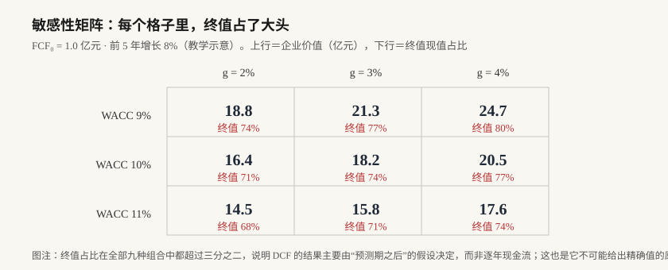
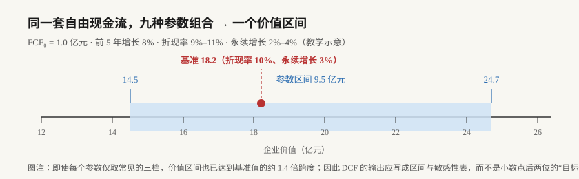

绝对估值法：DCF 给出的是价值区间
绝对估值把未来自由现金流折现到今天。它的输出是一个依赖假设的价值区间，而不是一个可以“精确到分”的目标价；终值往往占了结果的七成以上，因此参数区间比小数点更重要。
为什么 DCF 不能给出精确值
绝对估值建立在一个信念上：企业有一个由它未来能产生的现金决定的“内在价值”，市场价格则围绕它波动。DCF（Discounted Cash Flow，现金流折现模型）就是把这个信念写成算式——把未来的自由现金流按一个折现率折算成今天的价值。
它要回答的是“如果我持有的是这些现金流，今天愿意付多少”，而不是“明天的股价会是多少”。把 DCF 的输出当成一个精确目标价，是这一章要拆掉的最主要误解。
误解与纠正：“模型越精细，估值越准”并不成立。DCF 的三个核心输入——未来自由现金流、折现率、永续增长率——都不可观测，只能估计。模型越精细，只是把假设写得更具体，并不会让假设更接近事实。
因此，本页的目标不是教你算出一个“正确答案”，而是教你（1）把 DCF 拆成可复核的假设，（2）用敏感性表把它变成区间，（3）识别最容易出错、对结果影响最大的那一两个参数。
DCF 的构成与公式
自由现金流（FCF）是 DCF 的“燃料”。它在报表上没有法定行次，是分析者根据现金流量表派生的指标；“自由现金流 = 经营活动现金流 − 资本支出”是最常见的简化口径，但不同分析师还会扣除租赁付款或加回其他项。使用任何 FCF 口径时都要先声明定义。
三个输入的性质完全不同：WACC（加权平均资本成本）是折现率，代表资金的机会成本；g 是预测期之后的永续增长率；FCF 是预测期各年的现金流。前者可从负债成本与股权成本估算，后两者几乎完全依赖判断。当 g 无限接近 WACC 时，TV 会急剧放大甚至无意义，因此 g 必须小于 WACC。
算例：两阶段模型
以下数据均为教学示意。设某公司当前自由现金流 FCF₀ = 1.00 亿元，预测期 5 年、每年增长 8%，之后永续增长 3%，折现率 WACC = 10%。
| 年份 t | 增长率 | FCFₜ（亿元） | 折现因子 1.10ᵗ | 折现值（亿元） |
|---|---|---|---|---|
| 1 | 8% | 1.080 | 1.100 | 0.982 |
| 2 | 8% | 1.166 | 1.210 | 0.964 |
| 3 | 8% | 1.260 | 1.331 | 0.946 |
| 4 | 8% | 1.360 | 1.464 | 0.929 |
| 5 | 8% | 1.469 | 1.611 | 0.912 |
| 预测期现值合计 | 4.73 | |||
终值：FCF₅ × (1+3%) ÷ (10% − 3%) = 1.469 × 1.03 ÷ 0.07 = 21.62 亿元；再折现到今天：21.62 ÷ 1.611 = 13.42 亿元。企业价值 = 4.73 + 13.42 = 18.16 亿元，其中终值现值占 73.9%。

可手算核对：预测期五年现金流折现合计 4.73 亿元，只占企业价值约四分之一；剩下四分之三来自一个用永续增长率 g 反推的终值。这意味着对 g 的争议远比对前五年预测的争议重要。
敏感性：区间而非点估
把上面算例的参数从单点扩展成区间：折现率取 9%、10%、11% 三档，永续增长取 2%、3%、4% 三档。九种组合算出的企业价值从 14.5 亿元到 24.7 亿元（图 1）；终值占比则从 68% 到 80%。

两个方向的敏感度几乎对称：永续增长从 2% 升到 4%，基准价值上升约 25%；折现率从 9% 升到 11%，价值下降约 25%。这就是为什么成熟的估值报告不会只写一个数字，而是同时给出基准情形与敏感性表，并标注哪些参数是“关键假设”。
不要相信“精确到小数点后两位”的估值：如果一个 DCF 算出的目标价恰好是 100.00 元，那通常是假设被反向“凑”出来的，而不是模型算得准。正确的做法是把结果写成区间，并对关键参数做压力测试。
四个常见陷阱
- 终值主导，却被当成配角。本页算例中终值占 74%。若 g 设得过高（例如长期高于整体经济增长），等于假设这家公司永远比经济整体跑得快，需要额外证据支持；实务中常用“永续增长率不高于长期通胀与 GDP 增长”作约束，但要声明这是经验惯例而非准则规定。
- 折现率与资本结构循环。WACC 里的权益成本要用 β（贝塔），而 β 又受资本结构影响；同时你又在用 WACC 估值并隐含假设了资本结构。这类循环没有唯一解，需做一致性检查：输入与输出假设的资本结构应一致，而不是各算各的。
- 现金流口径不一致。用“净利润”代替自由现金流、或用企业自由现金流搭配股权成本折现，都会系统性地算错。现金流口径（企业 vs 股权）、折现率口径（WACC vs 股权成本）必须匹配。
- 把企业价值当成股权价值。企业价值（EV）对应全体资本提供者；要得到每股价，需减去净债务与其他优先求偿权（含少数股东权益等），再除以股本。跳过这一步会把估值系统地偏高。
还有一个适用边界：对处于早期、当前自由现金流为负、或强周期利润大起大落的公司，DCF 对预测期假设异常敏感，常改用情景分析或相对估值验证。这不是说 DCF 错，而是说它更适合现金流可预测的成熟企业。
DCF 工作台
默认值即上文算例（FCF₀ = 1.0 亿元、前 5 年 8%、折现率 10%、永续增长 3%），结果 18.16 亿元、终值占比 74% 可手工复算。改任一参数，结果与区间都会随之变化。
修改假设，即时复算
增长率与折现率均填百分数（如 8 表示 8%）；FCF₀ 单位与输出一致。区间取折现率与永续增长各上下 1 个百分点的四种组合。
这个工作台只算了最简单的两阶段情形，未扣除净债务，也未根据资本结构重建 WACC。它的作用是把“改一个参数会移动多少”可视化，而不是给出一个可直接使用的目标价。
核查清单与自测
声明自由现金流的定义（是否扣除租赁付款、是否含少数股东），并保持与折现率口径一致。
测算并披露终值现值占企业价值的比例；超过七成时，重点放在 g 与 WACC 的依据上。
给出至少一张双参数敏感性表（折现率 × 永续增长），而不是单一目标价。
检查 g < WACC、g 不超过长期名义经济增速量级，且在报告中写明这两个约束的理由。
从企业价值到股权价值：减净债务与优先求偿权，再除以股本，并说明摊薄假设。
自测一：DCF 算出的目标价与当前股价一致，能否说明估值正确？
不能。两者一致只说明你的假设与市场当前定价“巧合地接近”，而这些假设本身是无法验证的。应回到三个输入，看假设是否有证据支撑，并用区间而非单点表达结论。
自测二：某 DCF 中终值占比达到 90%，意味着什么？
意味着结果几乎完全由永续增长率与折现率决定，前几年的现金流预测对结果几乎没有影响。这时应优先核查 g 与 WACC，并考虑改用退出倍数法等交叉验证，而不是微调前面的假设。
结论：DCF 不是一台给出“正确价格”的机器，而是一套把假设写成价值区间的框架。它的可验证性来自你能把每个参数、每个口径和每次压力测试都摆在台面上。
依据与边界
本页所有数字均为教学示意，不指向任何真实公司，也不构成投资建议。DCF 与 Gordon 永续增长模型属于分析者采用的估值工具，不是会计准则或监管强制披露项；自由现金流也非法定报表行次。
现金流量的列报与分类以财政部《企业会计准则》为准（如现金流量表、财务报表列报相关准则，以最新版本为准）；本页对“自由现金流 = 经营现金流 − 资本支出”的写法仅是一种常见简化，不代替标准原文。